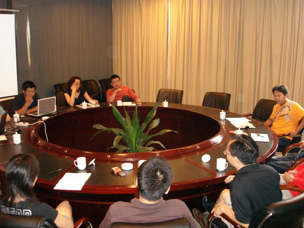

浙江杭州首届连珠俱乐部会谈纪要
#1 浙江杭州首届连珠俱乐部会谈纪要 作者：有志青年 发表时间：2007-9-1 12:27:28
首届俱乐部论坛圆桌会议在浙江杭州举行，中国棋院综合发展部五子棋项目负责人徐炳继出席了本次会议，参与会议的还有浙江代表徐永伟、陈卫忠，河北妙手俱乐部负责人郑秋女士，河南俱乐部代表杨玉银和北京高校代表李睿凡，另外陈新、戴晓涵列席。上海薛文曦代表上海地区参与观摩，姜海做为特邀成员参与，会议由潘仲良记录。
会议由徐永伟主持，姜海做市场量化阐述，各地五子棋俱乐部参与讨论。徐炳继做总结。
议题：现实俱乐部发展措施（资源、职能、运作、第三方的介入和利益）
徐永伟：
今天非常高兴，首届俱乐部论坛会议在杭州召开，这是一次增加俱乐部间合作和了解的会议，也为今后市场运作建立彼此间的共赢创造条件。
五子棋发展到今天，我们可以看到目前国内五子棋发展的两个模式，第一个是以以前的基础发展起来的，由棋手的爱好参与的组织，另外的就是目前出现的以俱乐部形式的团体，五子棋俱乐部的出现，给五子棋的发展提供了新的生命，从今年的首届全国五子棋团体锦标赛以来，俱乐部扮演了非常重要的角色。而且这些俱乐部的运作是必须有资本投入，那么自然也需要考虑产出以及可持续发展等问题，在这个方面，培训自然也是俱乐部发展需要面临的问题，如何开展培训，怎样让五子棋的培训进入到国内的培训机构队伍和学校，如何做好普及是重要的课题。
前不久，我曾经跑了许多培训机构，也看到了许多问题，在这些问题中，我们需要通过事物看本质。一直以来，许多五子棋运动的参与者，都在自欺欺人地说同样的一句话，中国五子棋发展了10年，已经怎么怎么样，或者说五子棋有非常广阔的群众基础，但事实是我们想的那样乐观吗？完全不是的，我们所说的群众基础，可能仅仅是指他们听说过五子棋或者在意识里知道五子棋这个词而己，但他们对这个的了解可能还是空白。
杭州青少年宫一个教围棋的老师说的是这样一句话，五子棋培训，我们如果开展的这个培训，今年我们办了班，明年我们教什么，很明显，在大众的意识里，五子棋是不需要学习的，在宁波青少年宫，棋类培训的招生，围棋是11个班，国际象棋是8个班，五子棋是8人，从这个数据里面我们看到的是什么，这样也突出了一个问题，五子棋宣传力不够，群众不了解。另外也在向我们述说有一个非常大的市场还没运做起来。目前国内在青少年宫等国家培训机构开展五子棋培训的几乎为零，那么怎样去挖掘和开发这个市场，也是需要讨论和解决的问题。
在培训过程中，有学生的家长提出过这样的问题，围棋和象棋都有针对青少年学习的教程，一般的培训机构会写明采用什么教程来辅导，五子棋是采用什么教程的，你告诉他我是按自己的思维来教这个课程的，那么家长的信任度会是什么？浙江已出版的教材缺少幼儿教材，针对学前儿童的教材。
徐炳继：
问题是如何被社会认可。如果有完善的教材，教师队伍，比较容易进入学校。也利于普及。
李睿凡：
建议棋院组织有经验的讲师编写初级教程。初级教程面对没有基础的学生，关键在于教的方法。
徐永伟：
被社会认同，需要一段路才可以，在以前我们的培训中，我们特别提出的是对智力的开发，当然这个也是重要的一个环节，但我们可以更好地去说明学棋对青少年的习惯培养更有意义，耐心、思考、处理事情的能力、遭遇挫折的勇气等。反过来说，用五子棋的简单易学的特点来发展五子棋的培训。学其他棋类也可以获得这些素质教育的内容，但围棋可能4到6年才是个基础，相对来说家长的投入相对比较大。五子棋相对简单，在对孩子素质培养上差别不大，但学习时间短，平时练习容易，有2年就可以培养和纠正孩子的一些习惯，而且许多家长让孩子学棋不一定是要让孩子获得成绩，他们更看重的是对孩子的素质和习惯培养，我们应该抓住重点。虽然我们在一些地区的学校的普及已经有了基础和取得了一些成绩，在这个方面，河北妙手俱乐部的思路是可以很好地学习的，接下来我们请郑秋介绍她在这方面的经验和思路。
郑秋：
培训主要在小学，一年前得知有全国少儿锦标赛，开始少儿培训。之前俱乐部都是成人棋手。有一定的师资力量，就选了一所学校，找校长探讨。学校有生源，教室，俱乐部有师资力量。完全可以进行有效的整合，获得双赢。
学校在家长会上进行宣传，小学生培训主要需要家长支持。选择生源从3年级开始，由班主任推荐。通过筛选淘汰，定在八九人，采用未位淘汰法，让学生有个新的认识。总共经过8个多月的培训，参加全青赛。总体感觉培训点比较成功，学生代表小学直接参加全国性质比赛，受到校长重视，支持。也为俱乐部的宣传起到了一定的效果，可以说是双赢。
陈卫忠：
和家长取得沟通是非常重要的，在我们开展五子棋培训过程中，我们由学校邀请家长开座谈会，取得学校、俱乐部、家庭多方位的了解和信任，目前，我们带孩子出去比
#2 Re:浙江杭州首届连珠俱乐部会谈纪要 作者：小丸.net 发表时间：2007-9-1 14:09:42

#3 Re:浙江杭州首届连珠俱乐部会谈纪要 作者：xr__ 发表时间：2007-9-1 14:44:04
会议中怎么没人从五子棋本身去找原因！之所以不景气 我个人觉得很大一部分原因在规则上！